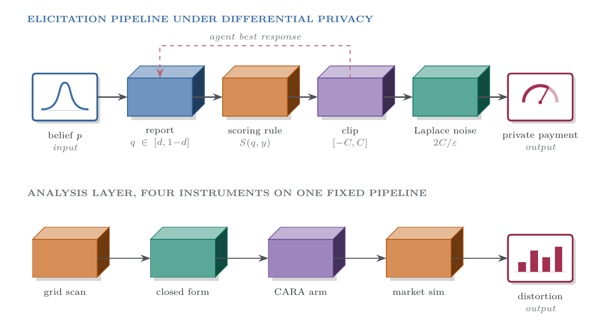
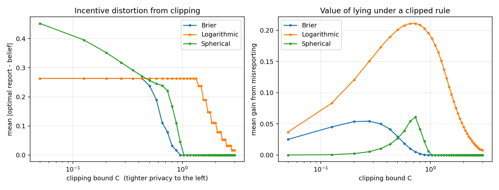
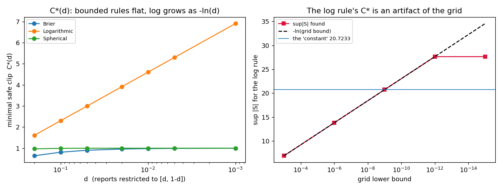

Project 01
What differential privacy costs a proper scoring rule.
Releasing a forecaster's payment under differential privacy means clipping the score before noise is added. Clipping is a nonlinear transform of the score surface, so it can quietly destroy the one property a proper scoring rule exists to provide. This measures how much it costs, rule by rule.

A proper scoring rule is built so that reporting your true belief maximises your expected payment. To release that payment under differential privacy you must bound the mechanism's sensitivity, and in practice that means clipping the score into [-C, C]. Zero-mean noise added after the clip does not move the argmax, so the noise preserves propriety. The clip does not: it flattens the score surface, and a flattened surface can move the optimal report away from the agent's belief.
Nobody appears to quantify that. How badly, and for which rules?
1. Damage is not uniform across rules. Mean distortion |optimal report − true belief|, averaged over beliefs in [0.05, 0.95]. Zero means propriety is intact.
| clip C | Brier | Logarithmic | Spherical |
|---|---|---|---|
| 0.05 | 0.2631 | 0.2631 | 0.4519 |
| 0.50 | 0.2367 | 0.2631 | 0.2557 |
| 1.00 | 0.0000 | 0.2631 | 0.0447 |
| 2.00 | 0.0000 | 0.1105 | 0.0000 |
| none | 0.0000 | 0.0000 | 0.0000 |
Brier is repaired at C = 1.0 and spherical at C = 2.0, because the clip stops binding once it exceeds their natural range. The logarithmic rule is still distorted at C = 2.0, which inverts standard practice: the log rule is the canonical choice in elicitation theory and is the worst choice under privacy.
2. The sufficient clip is independent of the agent's utility. C* = sup|S| gives identical distortion under risk-neutral and CARA risk-averse agents at every γ tested, to four decimals. This is forced rather than lucky: a clip that never binds cannot alter the objective, whatever that objective is. The threshold is a property of the score function, not of the agent.
3. That clip is sufficient but not minimal. Restricting reports to [d, 1−d], an agent who never claims certainty, yields closed forms verified against a 200,001-point numeric scan to 1.9e−16 relative error: (1−d)² for Brier, −ln d for logarithmic, (1−d)/√((1−d)²+d²) for spherical. Since Laplace noise scale is 2C*/ε, the clip ratio is the noise saving:
| d | Brier | Logarithmic | Spherical |
|---|---|---|---|
| 0.2 | 1.56× | 12.88× | 1.03× |
| 0.05 | 1.11× | 6.92× | 1.00× |
| 0.001 | 1.00× | 3.00× | 1.00× |
Measured incentive cost of that tighter clip, inside the assumed domain, across three rules and d ∈ {0.1, 0.02, 0.005}: maximum distortion 0.000000, nine configurations out of nine. The price falls entirely on agents whose beliefs lie outside the assumed range, and it is qualitative rather than small: an agent holding p = 0.01 is driven to report certainty.
4. The logarithmic rule has no finite C* at all. A naive scan reports 20.7233. That number is exactly −ln(1e−9), the lower bound of the grid being scanned, and it tracks the grid perfectly until it hits a second implementation constant and sticks. The "sensitivity of the logarithmic rule" was two settings and no mathematics.

| setting | binary events, single agent, Laplace mechanism |
| rules | Brier, logarithmic, spherical, plus the Beta family |
| agents | simulated, risk-neutral and CARA (γ from 0 to 2) |
| data | none, this is numerical theory rather than an empirical study |
| shows | C* is utility-independent, and the minimal clip is domain-dependent and closed-form |
| does not show | real forecaster behaviour, multi-outcome events, or that C*(d) is minimal rather than merely sufficient |
One caveat worth stating up front: C* is not scale-invariant. It is a property of a rule at a chosen payment scale, so cross-rule comparisons are only meaningful at a fixed scale. Halving the rule halves the clip and halves the noise, but it also halves every payment, so the agent's signal-to-noise is unchanged.
A literature check found the three threads treated separately and never combined. Privacy Games models payments between parties with a proper scoring rule. Surrogate Scoring Rules handles elicitation without ground truth. Differential privacy surveys treat clipping as a sensitivity device and analyse its bias-variance trade-off, not its effect on truthfulness. No paper was found asking whether the clipping that privacy requires destroys the propriety the rule exists to provide. That was a search-level check, not a systematic review.
pip install numpy matplotlib
python experiment.py # clipping, C*, market sim, risk aversion
python experiment_reachable.py # the minimal clip over reachable reports| script | runtime | outputs |
|---|---|---|
experiment.py | ~30 s | results.json, figure_distortion.png |
experiment_reachable.py | ~20 s | results_reachable.json, figure_reachable.png |
CPU only, no dataset download, no GPU.
The complete report, with the derivations, the Beta-family sweep and the full error trail, is in report.pdf. The architecture diagram is also available as architecture.pdf. The report’s closing section states the limitations of every result in full.
Plots produced by the experiment scripts in this folder, referenced from the full report.
